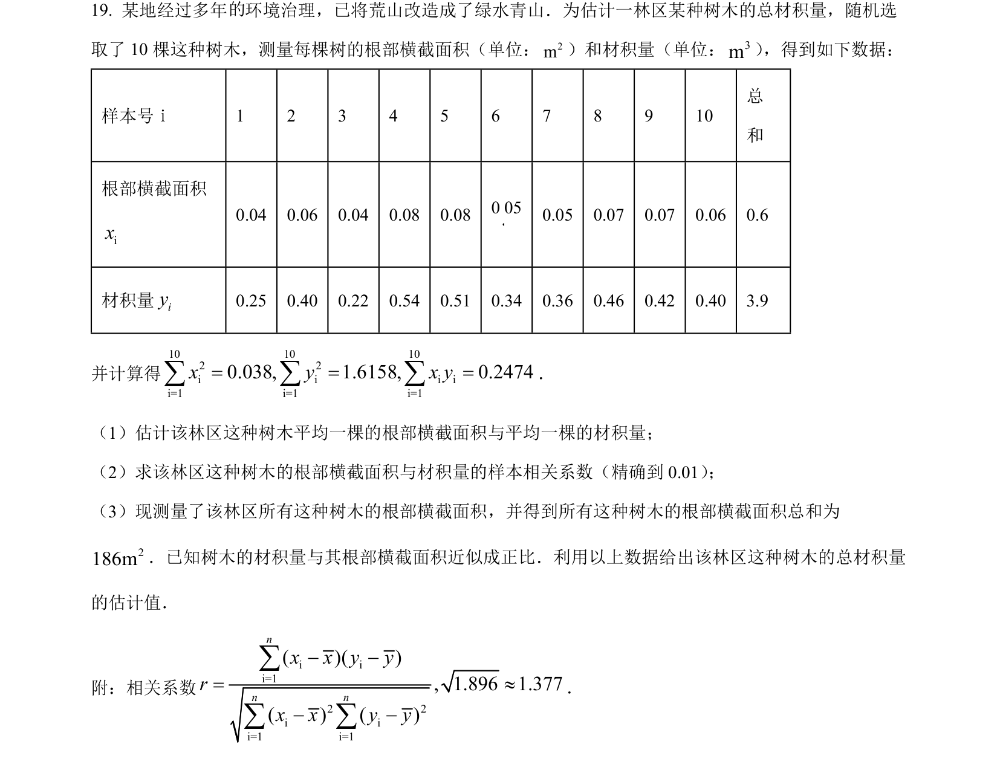
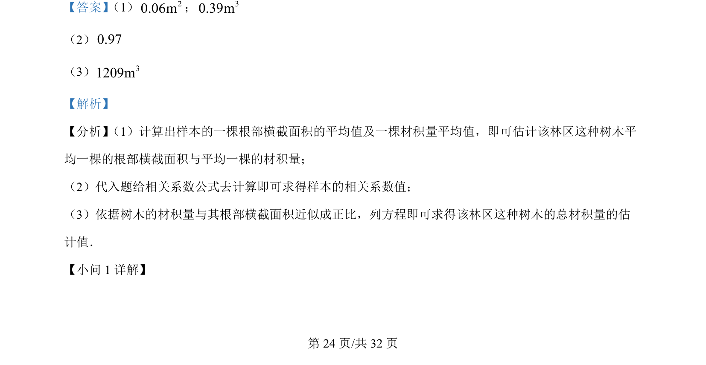
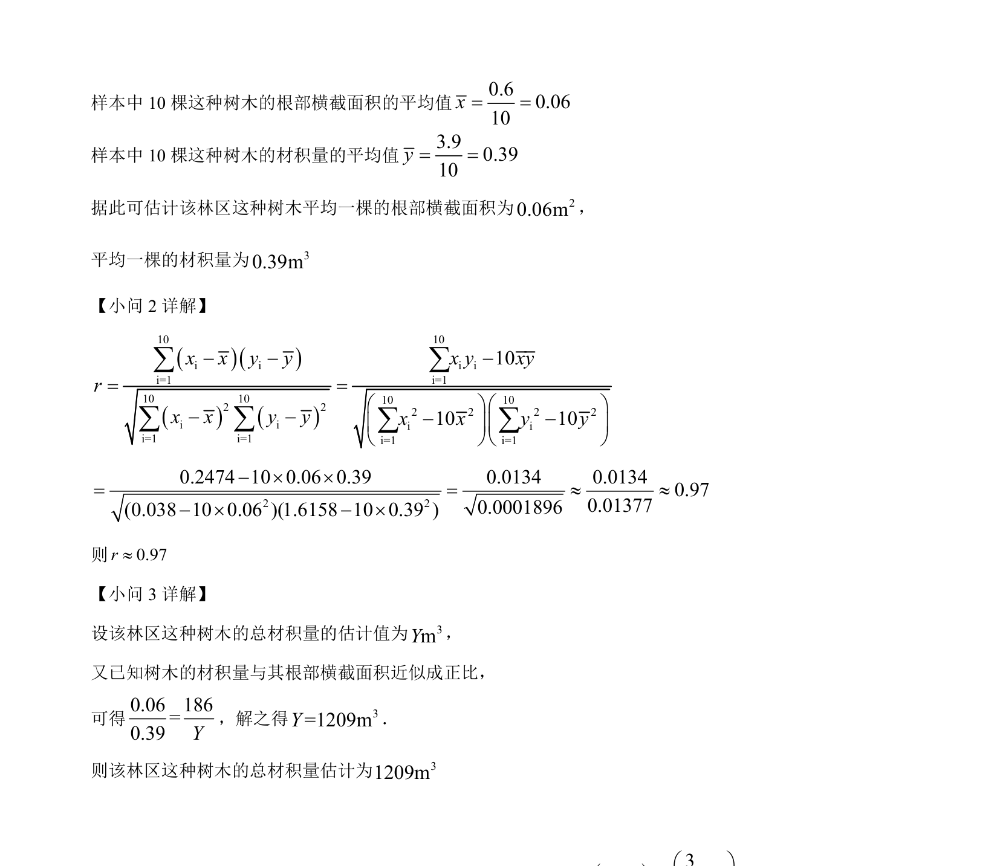

2022-理-19
吉林2022卷全国乙理题19题型解答难中
考点：均值 样本相关系数 比例估计
题面

摘要
该题考查利用样本数据估计总体均值、计算样本相关系数以及利用比例关系估计总材积量。
关联考点
答案与解析


📄 原 PDF 第 24 页：素材/真题/吉林/2008-2024·（吉林）数学高考真题/2022年高考数学试卷（理）（全国乙卷）（解析卷）.pdf
题干文本
- 某地经过多年 环境治理，已将荒山改造成了绿水青山．为估计一林区某种树木的总材积量，随机选
取了 10 棵这种树木，测量每棵树的根部横截面积（单位：2m）和材积量（单位：3m） ，得到如下数据：
样本号ｉ 1 2 3 4 5 6 7 8 9 10
总
和
根部横截面积
ix
0.04 0.06 0.04 0.08 0.08 0 05 0.05 0.07 0.07 0.06 0.6
材积量iy0.25 0.40 0.22 0.54 0.51 0.34 0.36 0.46 0.42 0.40 3.9
并计算得
10 10 102 2i i i ii=1 i=1 i=10.038, 1.6158, 0.2474x y x y= = =å å å．
（1）估计该林区这种树木平均一棵的根部横截面积与平均一棵的材积量；
（2）求该林区这种树木的根部横截面积与材积量的样本相关系数（精确到 0.01） ；
（3）现测量了该林区所有这种树木的根部横截面积，并得到所有这种树木的根部横截面积总和为
2186m．已知树木的材积量与其根部横截面积近似成正比．利用以上数据给出该林区这种树木的总材积量
的估计值．
附：相关系数
i ii=12 2i ii=1 i=1(, 1.896 1.377)( )( ) ( )nn nx x y yrx x y y- -=»- -åå å
．
解析文本
【答案】 （1） 20.06m； 30.39m
（2）0.97
（3） 31209m
【解析】
【分析】 （1）计算出样本的一棵根部横截面积的平均值及一棵材积量平均值，即可估计该林区这种树木平
均一棵的根部横截面积与平均一棵的材积量；
（2）代入题给相关系数公式去计算即可求得样本的相关系数值；
（3）依据树木的材积量与其根部横截面积近似成正比，列方程即可求得该林区这种树木的总材积量的估
计值．
【小问 1 详解】
的.